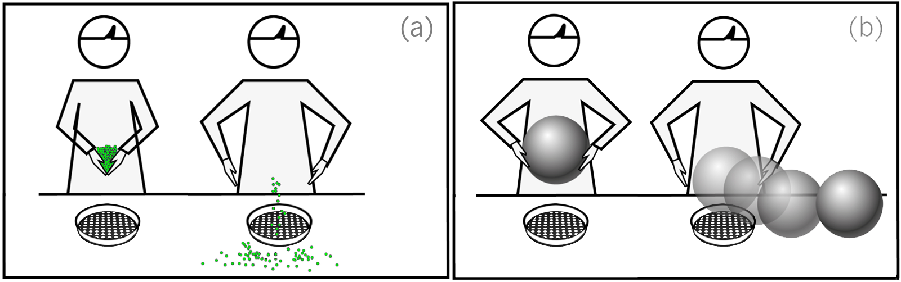

Evaluating Human Cognition of Containing Relations with Physical Simulation
Wei Liang1,2 Yibiao Zhao2 Yixin Zhu2 Song-Chun Zhu2
1Beijing Institute of Technology 2University of California, Los Angeles, USA

Two typical cases when a container fails to containits contents: (a) the container with holes can not contain tiny objects; (b) the container with a low wall fails to contain a big ball. The left figures of these two panels illustrate a stimuli of our experiments, and the right figures illustrate simulation results with physical engine or in human mind.
Abstract
Containers are ubiquitous in daily life. By container, we consider any physical object that can contain other objects, such as bowls, bottles, baskets, trash cans, refrigerators, etc. In this paper, we are interested in following questions: What is a container? Will an object contain another object? How many objects will a container hold? We study those problems by evaluating human cognition of containers and containing relations with physical simulation. In the experiments, we analyze human judgments with respect to results of physical simulation under different scenarios. We conclude that the physical simulation is a good approximation to the human cognition of container and containing relations.
Publication
Evaluating Human Cognition of Containing Relations with Physical Simulation
Wei Liang, Yibiao Zhao, Yixin Zhu, Song-Chun Zhu
Proceedings of the 37th Annual Meeting of the Cognitive Science Society
Paper
, Video
BibTex
@inproceedings {liang2015evaluating,
title=
{Evaluating Human Cognition of Containing Relations with Physical Simulation},
author = {Liang, Wei and Zhao, Yibiao and Zhu, Yixin and Zhu, Song-Chun},
booktitle = {Proceedings of the 37th Annual Meeting of the Cognitive Science Society (CogSc},
pages={782--787},
year={2015}
}

- 媒体计算与智能系统实验室
- Media Computing and Intelligent Systems Lab
Beijing Institute of Technology Copyright Address: 5 South Zhongguancun
Street, Haidian District, Beijing Postcode: 100081